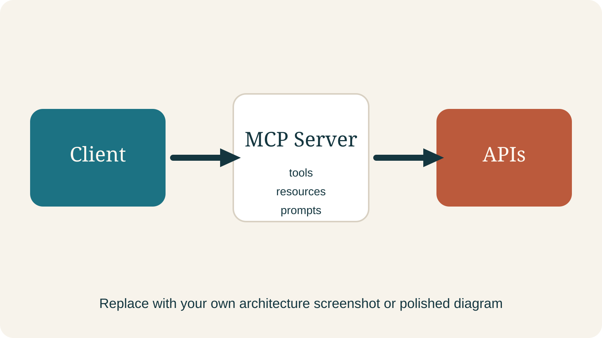
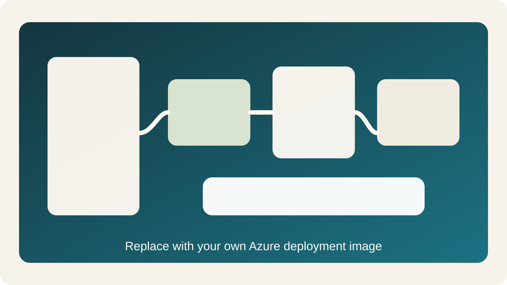

Building and deploying a Python MCP server

uv keeps the environment calmCall a function
Read useful data
Reuse task framing
Teaching line
@mcp.tool() is the moment a normal function becomes a discoverable capability.
Canonical shape
One simple lookup plus one live-data or status tool is enough to teach discovery, invocation, and deployment.

Why this matters
This is the moment the protocol stops feeling abstract.
What should become a tool
What outside signal helps
What still needs approval
Final message
The goal is not protocol expertise. The goal is confidence that this can be built, tested, and connected.
Copilot Studio Education | MCP build track